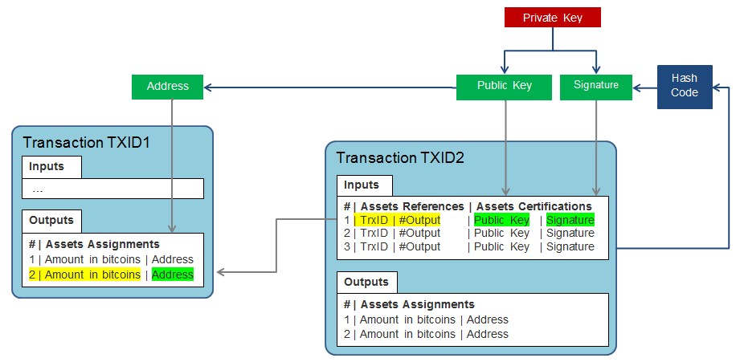

This paper is a technical introduction to the Bitcoin electronic cash system. It presents the design principles of transactions and blockchain. It is based on the Satoshi Nakamoto's paper and the Wiki site of the Bitcoin community.
Some mechanisms are illustrated with JavaScript code for Node.js. We do not intend with these code snippets to provide an implementation for production, but to help any reader with a basic programming knowledge to understand the main features.
This article is written as a kind of tutorial, to go further, we recommend a more formalized article by Krzysztof Okupski: Bitcoin Developer Reference.
Revision history:The objective expressed in Satoshi Nakamoto's paper is to provide an electronic currency without intermediary institutions: neither trusted third party for the payment, nor a supervisory authority for monetary creation. It relies on a public ledger of transactions with an infalsifiable recording that can be verified by all, but whose stakeholders remain anonymous. The context for applying this currency is e-commerce on the Internet.
To realize this system, the main challenge is to replace a central server by a network of agents who pool their resources to create a decentralized time-stamping system of transactions, in order to obtain a sequential and non-contestable record of transactions. It must in particular prevent the fraud of double-spending, which consists of using the same bitcoins to pay simultaneously two payees.
The Bitcoin network is the internet network used as a peer-to-peer network. All participants in the Bitcoin network have the same status; no participant can claim any higher legitimacy. Each participant is considered as a peer to the others.
Two main types of messages are broadcasted as widely as possible on the Internet:
When a new transaction is signed, it is broadcasted on the Bitcoin network. It will then be collected and recorded in a block. Each block, once constituted, will in turn be broadcasted.
All these messages are public and verifiable. They make it possible to notify and therefore take to witness all the participants of the Bitcoin network on any new information that enriches the blockchain.
Messages are transferred over the network in a binary format, encoding numbers on 32 bits or 256 bits using the Little-Endian convention.
The Little-Endian convention sets the bytes from the lowest weight to the strongest weight, the Big-Endian convention sets the bytes from the strongest weight to the lowest weight. For example the number 1 is represented in hexadecimal on 32 bits by 00000001 with the Big-Endian convention and 01000000 with the Little-Endian convention.
The number 1 on 32 bits with the Big-Endian convention:
Byte 3 | Byte 2 | Byte 1 | Byte 0 --------+---------+---------+-------- 00 | 00 | 00 | 01The number 1 on 32 bits with the Little-Endian convention:
Byte 0 | Byte 1 | Byte 2 | Byte 3 --------+---------+---------+-------- 01 | 00 | 00 | 00
Each participant in the network uses a free open-source software that is both:
The role of agents is to support this peer-to-peer network:
Some participants may use the software in a lightweight mode. They will not store a full instance of the blockchain. They should query the other agents to obtain a partial view of the blocks, in order to verify transactions for payments they receive (simple payment verification).
To prevent any fraud, the transactions must be registered in an uncontestable and immutable order. As transaction containers, the blocks themselves must be chronologically ordered. This order is certified by the timestamp token attached on each block.
The calculation of the timestamp token has three main characteristics:
Therefore, any change of a block would invalidate the timestamp token, and would require a new calculation of the timestamp token. Since each timestamp token is computed with the timestamp token of the previous block, it would also be necessary to update the following blocks, thus to recalculate all following timestamp tokens. Thus the timestamp token reduces the risk of rewriting a block, inserting a block, or removing a block as blocks are added.
A cryptographic hash function transforms an input message into a digital code, called the hash code of the message. This hash code reflects the message itself. The same hash function applied to an altered message will produce another code distinct from the previous one.
SHA-256 (Secured Hash Algorithm) specifies a hash method which result is a big number encoded on 256 bits. It is considered as secured, because an alteration of a single bit of the message will produce another distinct hash code, and attempting to alter a message in order to get a specific hash code would require too many attempts.
The sha256 function below applies the SHA-256 algorithm to the message, as a binary buffer, the result is displayed with an hexadecimal representation:
// Calculate a hash code from a binary buffer
var crypto = require("crypto");
var sha256= function(buffer) {
var f = crypto.createHash('sha256');
var h = f.update(buffer);
return h.digest();
};
> var message = new Buffer('hello world');
> var hashCode = sha256(message);
> hashCode.toString('hex');
'b94d27b9934d3e08a52e52d7da7dabfac484efe37a5380ee9088f7ace2efcde9'
A nonce is an arbitrary value attached to a message to influence the resulting hash code. The hash function is applied to the message concatenated to a nonce, which is a 32-bit number encoded with the Little-Endian convention.
In the code below, we represent the nonce with a byte buffer, regardless of the processor-specific Little-Endian / Big-Endian convention, and then we concatenate the message to the nonce to get a new hash code.
var numberToInt32LE = function (n) {
var buffer = new Buffer(4);
buffer.writeUInt32LE(n,0);
return buffer;
};
> var nonce = numberToInt32LE (1000);
> nonce.toString('hex');
'e8030000'
> var message = new Buffer('hello world');
> var hashCode = sha256(Buffer.concat([message,nonce]));
> hashCode.toString('hex');
'51b2583117a8e0c8551883127bba6bdc3fe6603ac58ce4ad5c1c2a6def9be485'
Proof of work aims:
The SHA-256 algorithm produces a number that can be represented on 256 bits, so a number between 0 and 2256 - 1.
If the hash function based on the SHA-256 algorithm is considered as a pseudo-random function, the probability to get a number starting with N bits at 0 is 1 / (2N). This is equivalent to split the interval of numbers from 0 to 2256 - 1, into 2, 4, 8, ... 2N segments, and evaluating the probability of obtaining a number of the first segment.
The table below gives a sample of some probabilities:
| Number of bits at zero | Probability |
| 1 | 1 / 2 |
| 2 | 1 / 4 |
| 3 | 1 / 8 |
| 4 | 1 / 16 |
| 5 | 1 / 32 |
| 16 | 1 / 65,536 |
A proof-of-work specifies the expected number N of bits at 0 for the hash code. To satisfy this constraint, one must look for a nonce, with a probability of success of 1 / (2N).
This search can be done simply by an iteration of the nonce until satisfying the constraint. This iteration will require processor execution time, a longer time as the probability of success will be low.
To test the hash code, we will use the toReverseHexaNotation function which reverses the hexadecimal representation of a 32-bit or 256-bit encoded number with the Little-Endian convention.
Buffer.prototype.toReverseHexaNotation = function () {
var hexa = "";
for (var i = this.length-1; i >= 0; i--) {
var digits = this[i].toString(16);
hexa += ("0" + digits).slice(-2); // Add "0" for single digit
}
return hexa;
};
/* Return a nonce value for a number of expected bits.
* Warning: May take a while if the proof-of-work is difficult
* proof is a string of '0' characters, each character is
* a hexadecimal digit, so it is 4 zero-bits
*/
var calculateProofOfWork = function(proof, message) {
var len = proof.length;
for(var nonce=0;;nonce++){
var nonceLE= numberToInt32LE(nonce);
var hashCode = sha256(Buffer.concat([message, nonceLE]));
var result = hashCode.toReverseHexaNotation();
if (result.substr(0, len) == proof)
return nonceLE;
}
};
> var message = new Buffer('hello world');
> var nonce = calculateProofOfWork('00', message);
> nonce.toString('hex');
'0e000000'
Once the value of the nonce is found, the verification of the proof-of-work is immediate:
> var hashCode = sha256(Buffer.concat([message, nonce]));
> hashCode.toReverseHexaNotation();
'003a669f5c15dd75046bae1661f6a7326bbb80ec217080bff5c97286dc03d7c6'
The time and effort to find the nonce increases as the probability of success decreases:
var testProofOfWork = function (message, loops) {
var proof = "0";
for (var i = 0; i < loops; i++) {
var t1 = Date.now();
var nonce = calculateProofOfWork(proof, message);
var t2 = Date.now();
var hashCode = sha256(Buffer.concat([message, nonce]));
console.log ("hash:", hashCode.toReverseHexaNotation(),
"nonce:", nonce.toReverseHexaNotation(),
"elapsedTime:", t2-t1);
proof += "0";
}
};
> testProofOfWork(message, 5);
hash: 003a669f5c15dd75...80bff5c97286dc03d7c6 nonce: 0000000e elapsedTime: 1
hash: 003a669f5c15dd75...80bff5c97286dc03d7c6 nonce: 0000000e elapsedTime: 1
hash: 0001c1c7a764d470...76d596b136ef255ba911 nonce: 00001f0a elapsedTime: 254
hash: 00008e8dc456ce49...a36d96dfafab3f18fba0 nonce: 0000fca8 elapsedTime: 1486
hash: 000003aaa63ca127...35ba4de259c2625b617f nonce: 0008e973 elapsedTime: 12241
The Bitcoin protocol has evolved the proof-of-work. It is no longer specified as a number of bits at 0 but as a maximum value that the hash code can reach. This maximum value is called the target.
This target is represented in a compact form of 32 bits, called bits. This representation is based on the OpenSSL BN_bn2mpi () and BN_mpi2bn () functions:
The corresponding value is obtained by the following calculation:
var bigInt = require("big-integer");
var bitsToTarget = function (bits) {
bits = bigInt(bits);
var sign = bits.and(0x00800000).shiftRight(24).toJSNumber();
var exponent = bits.and(0xFF000000).shiftRight(24).toJSNumber();
var mantissa = bits.and(0x007FFFFF);
var target = mantissa.times(Math.pow(-1,sign)).shiftLeft(8 * (exponent-3));
return target;
}
> bitsToTarget(0x04012345).toString(16);
'1234500'
The limit value chosen for the target, is the minimum effort of proof-of-work required, begins with 32 bits at 0:
0x00000000FFFF0000000000000000000000000000000000000000000000000000
Or in its compact form on 32 bits:
0x1d00ffff
The difficulty index is calculated by the ratio of the limit value of the proof-of-work to the current target. This index gives an estimate of the computational effort required to satisfy the proof-of-work. The higher the index is, the greater the computational effort is. A value of the index equal to 1 corresponds to the minimum effort.
> var bigInt = require("big-integer");
> var limit = bigInt("00000000FFFF0000000000000000000000000000000000000000000000000000",16);
> var target = bigInt("00000000000404CB000000000000000000000000000000000000000000000000",16);
> var difficultyIndex = limit.divide(target).toJSNumber();
16307
The target of the proof-of-work must be adjusted so as to generate a block every 10 minutes on average.
If a block is generated on average every 10 minutes, then over a period of 14 days, 2016 blocks must be generated (2016 blocks = 14 days x 24 hours x 6 blocks per hour). Thus every 2016 blocks, the target is adjusted by multiplying it by a factor. This factor is deduced from the difference in actual creation time of the 2016 blocks with the expected duration of 14 days. This adjustment take into account the processing power of the miners partipating to create the blockchain.
The timestamp token of each block is calculated with the hash code of the concatenation of the elements of its header. This header consists of:
The hash code of the contents of the block is calculated via a Merkle tree, the root of the Merkle tree is the hash code for all registered transactions.
// Header from block 125552
var header = {
version: 1,
previousToken: '00000000000008a3a41b85b8b29ad444def299fee21793cd8b9e567eab02cd81',
merkleRootHash: '2b12fcf1b09288fcaff797d71e950e71ae42b91e8bdb2304758dfcffc2b620e3',
time: new Date ("Sat May 21 2011 17:26:31 GMT+0000 (UTC)"),
bits: 440711666,
nonce: 2504433986
};
All elements in the header are considered as 32-bit or 256-bit numbers encoded with the Little-Endian convention. The serializeHeader function allows to compile this data in buffers, with the Little-Endian convention:
var serializeHeader = function (header) {
var buffers = [];
buffers.push (numberToInt32LE(header.version));
buffers.push (hexaNotationToInt256LE(header.previousToken));
buffers.push (hexaNotationToInt256LE(header.merkleRootHash));
buffers.push (dateToInt32LE(header.time));
buffers.push (numberToInt32LE(header.bits));
buffers.push (numberToInt32LE(header.nonce));
return Buffer.concat (buffers);
};
var dateToInt32LE = function (date) {
var time = date.getTime() / 1000; // remove milliseconds
return numberToInt32LE(time);
};
var hexaNotationToInt256LE = function (hexa) {
var bytes = new Array(32);
for (var i = 0, j = 31, len = hexa.length; i < len; i+=2, j--) {
bytes[j] = parseInt(hexa[i]+hexa[i+1],16);
}
return new Buffer(bytes);
};
> serializeHeader (header).toString('hex');
'0100000081cd02ab7e569e8bcd9317e2fe99f2de44d49ab2b8851ba4a308000000000000e320b6c2fffc8d750423db8b1eb942ae710e951ed797f7affc8892b0f1fc122bc7f5d74df2b9441a42a14695'
>
A first numerical hash code of a block is computed on the concatenation of the elements of the header, then a second hash code is calculated on this result, for historical reasons and by prevention. The effective timestamp token is this second hash code.
> var hashcode = sha256( sha256(serializeHeader (header) ) ); // hash twice
> hashcode.toReverseHexaNotation();
'00000000000000001e8d6829a8a21adc5d38d0a473b144b6765798e61f98bd1d'
We can check whether the target is reached:
var testProofOfWork = function (hashcode, target) {
return hashcode.lesser(target);
}
hashcode = bigInt(hashcode.toReverseHexaNotation(),16); // transform to big integer
var target = bitsToTarget(header.bits);
> testProofOfWork(hashcode, target);
true
The genesis block header is special because the timestamp token of the previous block is 0.
// Header from block 0
var header = {
version: 1,
previousToken: '0000000000000000000000000000000000000000000000000000000000000000',
merkleRootHash: '4a5e1e4baab89f3a32518a88c31bc87f618f76673e2cc77ab2127b7afdeda33b',
time: new Date ("Sat Jan 03 2009 18:15:05 GMT+0000 (UTC)"),
bits: 0x1d00ffff,
nonce: 2083236893
};
> var hashcode = sha256( sha256(serializeHeader (header) ) ); // hash twice
> hashcode.toReverseHexaNotation();
'000000000019d6689c085ae165831e934ff763ae46a2a6c172b3f1b60a8ce26f'
Is the target reached?
> hashcode = bigInt(hashcode.toReverseHexaNotation(),16); // transform to big integer
> var target = bitsToTarget(header.bits);
ffff0000000000000000000000000000000000000000000000000000
> testProofOfWork(hashcode, target);
true
As the transactions on the network are transmitted, they are collected in blocks, these blocks are stacked to form the Blockchain. The top of the blockchain is the most recent block and the base is the first block created by Satoshi Nakamoto, on January 3, 2009, the "genesis" block.
A timestamp agent is in charge of
Miners are individuals or organizations that run timestamp agents. The calculation of the timestamp token of a block must satisfy a proof-of-work. The proof-of-work leads to a long and randomness time of calculation, and therefore sets the miners in competition to provide the next block of the blockchain.
To encourage miners to invest resources and electricity to calculate the timestamp tokens, miners are empowered to add a special transaction to a block (the coinbase transaction). This transaction rewards the miner by levying fees on the transactions collected or by creating bitcoins ex-nihilo.
Without supervisory authority, no-one is mandated to verify that each miner complies with the protocol. The protocol is in fact imposed by consensus.
In the case of two blocks arrive almost simultaneously to a timestamp agent, two instances of blockchain are created in parallel. In this case, the protocol specifies that the timestamp agent keeps the two blockchain instances, but selects the first one to extend.
The principle of consensus is to adopt the longest instance of the blockchain as soon as it appears. This instance will represent the largest investment in computing among the community of timestamp agents. As long as honest timestamp agents own more than 50% of the computing power of the network, the longest blockchain contains valid and safe transactions.
Any dishonest agent who attempts to propose an alternative blockchain instance will be placed in minority by his peers. Indeed as each timestamp token is based on the previous block, it cannot add the new blocks coming from the majority group, and its own blocks will not be added to the longest blockchain.
The longest blockchain instance then appears as the blockchain approved by consensus; and therefore recognized by the majority. If a payee ensures that the transaction is successfully recorded in a block followed by enough blocks, it will be assured that the transaction is indeed recorded in the longest blockchain instance approved by consensus; and will be retained. This is why a miner can not immediately dispose of the special transaction which rewards him for his work. This transaction becomes valid when enough blocks have been added after the block containing this transaction.
The principle of consensus replaces a supervisory authority that ensures that every miner complies with the protocol. It can be noted here that the behavior of the majority of miners is law; even if this behavior is considered to be arbitrary (such as referring to the blockchain instance of the first block received) or even in some cases incorrect (if the majority of the miners use a defective software). It is not the specification of the protocol that matters but the implementation of the protocol by the software used by the majority of the miners. That's why to run the system, sharing a free and open source code is part of the solution.
The system is regulated according both to the traffic and the computational power of the timestamp agents.
The adjustment of proof-of-work every 2016 blocks is a protocol rule. This adjustment aims to ensure that a block is emitted every 10 minutes on average. Like any consensus rule, if a miner does not respect this adjusted proof-of-work, it will be put in a minority, and its blocks will be rejected by the majority of agents. The frequency of 10 minutes matches a projection estimated in 2008 of the storage capacity of the computers in the following years, especially to keep the blocks headers in RAM. Indeed, a block header contains the input data required to calculate a timestamp token.
Note that, if the difficulty of proof-of-work increases and requires more computing power, then individual miners can pool their resources.
Finally, the number of transactions per block is induced by the fees levied on the transactions, used to fund the cost of electricity required by the proof of work. However, the maximum size of a block is set to 1 MB in order to guarantee a fast broadcast of the blocks on the network.
In this section, we present the most commonly used transactions (Pay to Public Key Hash).
A transaction is a structured message. This structured message has 2 representations:
We call "serialization" the process of transforming a source format into the binary format. The binary format is the only "official" format. Indeed, the source format is out of scope of the protocol specification. Therefore, any process applicable to a transaction will be applied to this binary format.
The conversion rules to serialize a source format into a binary format are as follow:
The function serializeTransaction serializes a transaction represented with a JSON object into a buffer of bytes.
// an arbitrary structure
var transaction = {
version: 1,
paymentOrder: "Alice promises to pay the sum of one Bitcoin to Bob"
};
// convert an integer into a buffer of a single byte
var numberToInt8 = function (n) {
return new Buffer([n]);
};
// convert an integer into a buffer of 4 bytes using
// Little-Endian convention
var numberToInt32LE = function (n) {
var buffer = new Buffer(4);
buffer.writeUInt32LE(n,0);
return buffer;
};
var serializeTransaction = function (transaction) {
var buffers = [];
buffers.push (numberToInt32LE(transaction.version));
buffers.push (numberToInt8(transaction.paymentOrder.length));
buffers.push (new Buffer(transaction.paymentOrder));
return Buffer.concat(buffers);
};
> serializeTransaction (transaction).toString('hex');
'0100000033416c6963652070726f6d6973657320746f2070617920746865
2073756d206f66206f6e6520426974636f696e20746f20426f62'
The resulting bytes are described below:
|01 00 00 00| version as 32 bits Little-Endian
|33 | 51 bytes for payment order
|41 6c 69 63 65 20 70 72 6f 6d 69 73 65 73 20 74|Alice.promises.t|
|6f 20 70 61 79 20 74 68 65 20 73 75 6d 20 6f 66|o.pay.the.sum.of|
|20 6f 6e 65 20 42 69 74 63 6f 69 6e 20 74 6f 20|.one.Bitcoin.to.|
|42 6f 62 |Bob|
Some web sites display an hexadecimal notation of actual bitcoin binary messages, including transactions:
https://blockchain.info/tx/9e9f1efee35b84bf71a4b741c19e1acc6a003f51ef8a7302a3dcd428b99791e4?format=hexA hash of a transaction is a double hash of the binary format of the transaction. Algorithm SHA-256 is applied twice, for historical reasons, and to increase safety.
In the code below, we define the sha256 hash function. We need to serialize the transaction into its binary format, before applying sha256 function twice. We define also the toReverseHexaNotation function to display the hash code because a hash is considered as a big number using Little-Endian convention.
var crypto = require('crypto');
var sha256 = function(buffer) {
var f = crypto.createHash("SHA256");
var h = f.update(buffer);
return h.digest();
};
var hash = function (encodedTransaction) {
return sha256 (sha256 (encodedTransaction) );
}
Buffer.prototype.toReverseHexaNotation = function () {
var hexa = "";
for (var i = this.length-1; i >= 0; i--) {
var digits = this[i].toString(16);
hexa += ("0" + digits).slice(-2); // Add "0" for single digit
}
return hexa;
};
> sha256 (sha256 (serializeTransaction (transaction))).toReverseHexaNotation();
'3e1a51c876a14ea0c09e87d17418910fdc5fb2380af4d040f2b00c2a13906d1c'
The hash code of a transaction is named the txid. This transaction ID is used to refer a transaction.
We introduce a getTxid function to get txid for our source format. We add also the hexaNotationToInt256LE function to get the binary format of the txid.
// calculate a txid for a source format,
// return an hexa notation string for a source format
var getTxid = function (transaction) {
var encodedTransaction = serializeTransaction (transaction);
return hash (encodedTransaction).toReverseHexaNotation();
};
var txid = getTxid(transaction);
> txid
'3e1a51c876a14ea0c09e87d17418910fdc5fb2380af4d040f2b00c2a13906d1c'
var hexaNotationToInt256LE = function (hexa) {
var bytes = new Array(32);
for (var i = 0, j = 31, len = hexa.length; i < len; i+=2, j--) {
bytes[j] = parseInt(hexa[i]+hexa[i+1],16);
}
return new Buffer(bytes);
};
> hexaNotationToInt256LE(txid).toString('hex')
'1c6d90132a0cb0f240d0f40a38b25fdc0f911874d1879ec0a04ea176c8511a3e'
Thanks to getTxid function, we can create a map to store some transactions in source format, and used txid as a key.
var dbtrx = {}; // our transaction table
dbtrx[txid] = transaction;
A digital signature of a transaction is an encryption of the transaction hash calculated with a secret key. This secret key is called the private key. The signature of the transaction can be verified with an associated public key. The digital signature proves that the transaction has not been altered, and that transaction has been issued by the owner of the private key.
The algorithm secp256k1, based on elliptic curves (also known as 'ECDSA': Elliptic Curve Digital Signature Algorithm), is used for digital signature of transactions. This algorithm allows to generate a new pair of encryption keys: a private key and a public key. The private key is a 256 bits number randomly generated. And the public key is calculated from this private key.
var secp256k1 = require('secp256k1');
var generatePrivateKey = function () {
var privateKey;
do {
privateKey = crypto.randomBytes(32);
} while (!secp256k1.privateKeyVerify(privateKey));
return privateKey;
}
var alicePrivateKey = generatePrivateKey();
// get the public key in a compressed format
var alicePublicKey = secp256k1.publicKeyCreate(alicePrivateKey);
> alicePrivateKey.toString('hex');
'27d9b1f6d8567054f1542760ff943d0582e95bd8c1ba08355c02536a5aaac4cc'
> alicePublicKey.toString('hex');
'02c90ad3d07fcc5f92194c7c993ff5b373ce6025b23720f028a2ee1c3aaf97346f'
A pubkeyHash is a double hash code of a public key. The first hash code is the result of the SHA256 algorithm, and the second hash code is the result of the RIPEMD160 algorithm which produces a shorter hash code on 160 bits. The bitcoin address is a base 58 encoding of the pubkeyHash and is transmitted by the payee to assign bitcoins. The base 58 encoding produces a code that is human readable and avoids error for transmission. We can note that the public key remains secret until the bitcoins are spent, and thus reinforce the security.
var sha256 = function(buffer) {
var f = crypto.createHash("SHA256");
var h = f.update(buffer);
return h.digest();
};
var ripemd160 = function(buffer) {
var f = crypto.createHash("RIPEMD160");
var h = f.update(buffer);
return h.digest();
};
var pubkeyHash = function (publicKey) {
return ripemd160(sha256(publicKey));
}
var bs58 = require('bs58');
var toAddress = function (pubkeyHash) {
var hash2 = Buffer.concat([Buffer.alloc(1), new Buffer(pubkeyHash, 'hex')]);
var hash3 = sha256(sha256(hash2));
var checksum = Buffer.alloc(4);
hash3.copy(checksum,0,0,4);
return bs58.encode(Buffer.concat([hash2, checksum]));
};
var publicKeyHexa = '0275e9b1369179c24935337d597a06df0e388b53e8ac3f10ee426431d1a90c1b6e';
toAddress (pubkeyHash(new Buffer (publicKeyHexa, 'hex')));
'17LdBoiECBncjLKva762PAXHhb4hEsbfmz'
We can create a digital signature of a transaction with our private key, and double hash code of the transaction:
var hashcode = sha256 (sha256 (serializeTransaction(transaction)));
var signature = secp256k1.sign(hashcode, alicePrivateKey).signature;
> signature.toString('hex');
'52990ea17ba23c88af7fc762644e3d1c5338a2e432142dae2b09576d259527aa...
>
We can verify that the signature is valid according to the public key and the hashcode itself:
> secp256k1.verify(hashcode, signature, alicePublicKey);
true
Attempting to use another public key leads also to a verification failure:
var bobPrivateKey = generatePrivateKey();
var bobPublicKey = secp256k1.publicKeyCreate(bobPrivateKey);
> secp256k1.verify(hashcode, signature, bobPublicKey);
false
Attempting to alter a transaction leads to a verification failure:
transaction.paymentOrder = "Alice promises to pay the sum of 1000 Bitcoins to Bob";
hashcode = hash(serializeTransaction(transaction));
> secp256k1.verify(hashcode, signature, alicePublicKey);
false
A signature is a sequence of two integers called R and S. For a transaction, this sequence is serialized using DER (Distinguished Encoding Rules) convention:
Example of a signature using DER:
var signatureDER =
"3045" // sequence (0x30) of 69 (0x45) bytes
+ "0221" // fist item 'R' is an integer (0x02) of 33 (0x21 ) bytes
+ "009eb819743dc981250daaaab0ad51e37ba47f7fb4ace61f6a69111850d6f29905"
+ "0220" // second item 'S' is an integer (0x02) of 32 (0x20) bytes
+ "6b6e59e1c002a4e35ba2be4d00366ea0f3e0b14c829907920705bce336ab2945"
To use a DER signature, secp256k1 package provides the signatureImport function:
var signature = secp256k1.signatureImport(signatureDER); // Decode a DER signature
A transaction records bitcoins transfers between participants. We call "asset" an amount in bitcoins that has been assigned to a user. An asset materializes:
The Bitcoin transaction consists of two tables, the input table, which lists the assets spent by one or more payers and the outputs table, which lists new assets assigned to one or more payees. When a payee wants to use an asset as a payer, a new transaction is created, and that asset will appear in the new input table. Each input table entry references an asset of an output table entry of a previous transaction. This reference consists of the identifier of the transaction that assigned it, and an entry number in the output table.
The total amount of assets allocated may be less than the sum of the assets spent. If there is a difference, this difference will be automatically assigned to the miner who recorded the transaction in a block. This difference will be considered as a transaction fee.
The diagram below shows the structure of a transaction and the locks set with the user's private keys.
A Bitcoin address will act as an account number associated with an asset: the public key is obfuscated with a double hashing and encoded in an alphanumeric to facilitate the communication by the payee to the payer.
To receive a payment, the payee generates a private key, a public key is calculated and transformed into a Bitcoin address, which will be communicated to the payer, to add output entries of the new transaction.
To make a payment, the payer creates a new transaction, to assign bitcoins to the payee Bitcoin address, and to collect unspent assets for this expense. For each collected asset, an entry of the input table will be created. This entry references an unspent asset by the identifier of a previous transaction and the entry number in the output table of this previous transaction. Then, two certification data are added:
Thus only the owner of the private key will be able to generate the Bitcoin address for a new assignment, and will be able to provide the information that allows the expense. The transactions are chained together because they set the identifier of the previous transactions, making it possible to trace the origin of an asset to the initial transaction that created the ex-nihilo bitcoins.
The cryptographic signature algorithm allows each agent of the network that broadcasts this transaction or records it in a block, to check the consistency of the address, the public key and the signature; without having access to the private key.
In its simplest form, with a single payer and a single payee, the transaction transfers the entire asset from one user to another. However, the representation of transactions is flexible enough to cover other payment cases:
A single type of transaction derogates from this representation, these are the initial transactions, named "coinbase transactions". These transactions only create an ex-nihilo asset to pay the "miners" who allocate their computing power to create the blockchain.
The structure of the transaction is managed by the bitcoin wallet. This wallet collects all available assets of a user; i.e. assets not yet spent. As a bank account, it makes it possible to get the balance in bitcoins. To make a payment, the software creates the transaction based on the amount to be paid and the available assets.
Public keys and signatures are actually stored as fragments of scripts that will be executed by agents to perform the check of a transaction. This script is not of the Bitcoin software, but inserted in the transactions. The execution of these scripts will result in the checks described above.
These scripts allow user to define other payment methods such as multiple signing to authorize the expense of an asset.
One of these payment methods is to inject data into the transaction. The assets in bitcoins is then "transformed" into data. The injected data becomes a certified and publicly available (proof-of-existence) information. For example, this data may be the cryptographic hash code of a document, the integrity of this document is then certified without the involvement of a trusted third party. This payment is called "bitcoins burning" because the bitcoins spent are replaced with data, and are no longer available for a next payment.
A script is a set of instructions for a stack based virtual machine. A stack based virtual machine uses a stack as memory. Any instruction reads/writes operands from/to this stack.
var OP_ADD = 0x93;
var OP_DUP = 0x76;
var script = [numberToInt32LE(16), OP_DUP, OP_ADD];
The script above will perform the following operations:
| Instruction Pointer | Instruction | Operations | Stack after operations |
| 0 | 10000000 | Push 0x10 on the top of the stack | 16 <- top |
| 1 | OP_DUP | Duplicate the top of the stack | 16 <- top, 16 |
| 2 | OP_ADD | Pop a first operand from the top of the stack, Pop a second operand from the top of the stack, Add the two operands, Push the result on top of the stack. | 32 <- top |
This script starts with an empty stack and stops with a stack containing the 0x20 value. By default, at the end of this script execution, the virtual machine is stopped with a return value 'true'. However, some checking operations may end the script execution with a result value of 'false' when they fail.
Each instruction is coded with a single byte, this byte is called the opcode (operation code). A statement which opcode is lower or equal to number 0x75 specifies a number of next bytes to push onto the stack as data.
The code below compile a script source code:
var compileScript = function(program) {
var buffers = [];
var bytes = 0;
for (var i = 0, len = program.length; i < len; i++) {
var code = program[i];
var type = typeof(code);
switch (type) {
case 'number':
buffers.push(numberToInt8(code));
bytes++;
break;
case 'object': // already encoded
operand = code;
buffers.push(numberToInt8(operand.length));
buffers.push(operand);
bytes += operand.length + 1;
break;
case 'string': // not yet encoded
var operand = new Buffer(code, 'hex');
buffers.push(numberToInt8(operand.length));
buffers.push(operand);
bytes += operand.length + 1;
break;
}
}
buffers.unshift(numberToInt8(bytes));
return Buffer.concat(buffers);
};
var script = [numberToInt32LE(16), OP_DUP, OP_ADD];
> compileScript(script).toString("hex")
'0704100000007693'
We create a runScript function to interpret the previous compiled code. This interpreter will be limited to 2 opcodes: OP_DUP and OP_ADD. Operands of arithmetic operations are signed integers on 32 bits, encoded with Little-Endian convention.
var runScript = function (program, stack) {
var operand;
var operand1;
var operand2;
var ip = 0; // instruction pointer
var last = program[ip++];
while (ip <= last) {
var instruction = program[ip++];
switch (instruction) {
case OP_DUP:
operand = stack.pop();
stack.push(operand);
stack.push(operand);
break;
case OP_ADD:
operand1 = stack.pop().readInt32LE();
operand2 = stack.pop().readInt32LE();
stack.push(numberToInt32LE(operand1 + operand2));
break;
default:
var size = instruction;
var data = new Buffer(size);
program.copy(data, 0, ip, ip+size);
stack.push(data);
ip += size;
break;
}
}
return true;
};
var stack = [];
var script = compileScript ([numberToInt32LE(16), OP_DUP, OP_ADD]);
var result = runScript (script, stack);
> result
true
> stack[0].readInt32LE()
> 32
Verifying a payment is the result of a script execution. This script is split into two parts:
The effective digital signature is ended by a hash type. The hash type is an indicator of the scope of the transaction to hash. In this paper we will use only the SIGHASH_ALL indicator.
Using the SIGHASH_ALL mode, each entry of the input table is verified one by one. For each entry, a transaction hash is calculated on a transaction altered as follow:
The full script contains the following statements (we indicate atomic actions on the stack between brackets for operations):
New Transaction
Input script
+---------------------+
|signature |
| (push signature) |
+---------------------+
Previous Transaction |public key |
Output script | (push public key)|
+-------------------------------------------------+---------------------+
|OP_DUP |
| (pop public key) |
| (push public key) |
| (push public key) |
+-------------------------------------------------+
|OP_HASH160 |
| (pop public key) |
| (push address) |
+-------------------------------------------------+
|address |
| (push address) |
+-------------------------------------------------+
|OP_EQUAL_VERIFY |
| (pop address) |
| (pop address) |
| (check equality) |
+-------------------------------------------------+
|OP_CHECKSIG |
| (pop public key) |
| (pop signature + hash type) |
| (hash transaction according to hash type) |
| (verify signature with public key |
| and transaction hash) |
+-------------------------------------------------+
The whole code verifies the first payment of the following actual Bitcoin transaction :
You will find the binary representation of this transaction with blockchain.info
var crypto = require('crypto');
var secp256k1 = require('secp256k1');
var sha256 = function(buffer) {
var f = crypto.createHash("SHA256");
var h = f.update(buffer);
return h.digest();
};
var ripemd160 = function(buffer) {
var f = crypto.createHash("RIPEMD160");
var h = f.update(buffer);
return h.digest();
};
Buffer.prototype.toReverseHexaNotation = function () {
var hexa = "";
for (var i = this.length-1; i >= 0; i--) {
var digits = this[i].toString(16);
hexa += ("0" + digits).slice(-2); // Add "0" for single digit
}
return hexa;
};
var numberToInt8 = function (n) {
return new Buffer([n]);
};
var numberToInt32LE = function (n) {
var buffer = new Buffer(4);
buffer.writeUInt32LE(n,0);
return buffer;
};
var numberToInt64LE = function (n) {
var buffer = new Buffer(8);
buffer.writeUInt32LE(n % 0xFFFFFFFFFFFFFFFF, 0);
buffer.writeUInt32LE(Math.floor(n / 0xFFFFFFFFFFFFFFFF), 4);
return buffer;
};
var serializeAmount = function (amount) {
return numberToInt64LE(amount * 100000000);
};
var hexaNotationToInt256LE = function (hexa) {
var bytes = new Array(32);
for (var i = 0, j = 31, len = hexa.length; i < len; i+=2, j--) {
bytes[j] = parseInt(hexa[i]+hexa[i+1],16);
}
return new Buffer(bytes);
};
var OP_ADD = 0x93;
var OP_DUP = 0x76;
var OP_HASH160 = 0xa9;
var OP_EQUALVERIFY = 0x88;
var OP_CHECKSIG = 0xac;
var serializeTransaction = function(tr) {
var buffers = [];
buffers.push(numberToInt32LE(tr.version));
buffers.push(serializeInputs(tr.inputs));
buffers.push(serializeOutputs(tr.outputs));
buffers.push(numberToInt32LE(tr.lockTime));
if (tr.hashType)
buffers.push(numberToInt32LE(Number(tr.hashType)));
return Buffer.concat(buffers);
};
var serializeInputs = function (inputs) {
var buffers = [];
var inputsSize = inputs.length;
buffers.push(numberToInt8(inputsSize));
for (var i = 0; i < inputsSize; i++) {
var input = inputs[i];
buffers.push(hexaNotationToInt256LE(input.txid));
buffers.push(numberToInt32LE(input.index));
buffers.push(compileScript(input.script));
buffers.push(numberToInt32LE(0xffffffff));
}
return Buffer.concat (buffers);
};
var serializeOutputs = function (outputs) {
var buffers = [];
var outputsSize = outputs.length;
buffers.push(numberToInt8(outputsSize));
for (var i = 0; i < outputsSize; i++) {
var output = outputs[i];
buffers.push(serializeAmount(output.amount));
buffers.push(compileScript(output.script));
}
return Buffer.concat (buffers);
};
var compileScript = function(program) {
var buffers = [];
var bytes = 0;
for (var i = 0, len = program.length; i < len; i++) {
var code = program[i];
var type = typeof(code);
switch (type) {
case 'number':
buffers.push(numberToInt8(code));
bytes++;
break;
case 'string':
var operand = new Buffer(code, 'hex');
buffers.push(numberToInt8(operand.length));
buffers.push(operand);
bytes += operand.length + 1
break;
}
}
buffers.unshift(numberToInt8(bytes));
return Buffer.concat(buffers);
};
// A simple virtual machine to run a decoded P2SH (Pay to Script Hash) scripts
var runScript = function (program, stack, currentTransaction, currentInputIndex) {
var operand;
var operand1;
var operand2;
var ip = 0; // instruction pointer
var last = program[ip++];
while (ip <= last) {
var instruction = program[ip++];
switch (instruction) {
case OP_DUP:
operand = stack.pop();
stack.push(operand);
stack.push(operand);
break;
case OP_ADD:
operand1 = stack.pop().readInt32LE();
operand2 = stack.pop().readInt32LE();
stack.push(numberToInt32LE(operand1 + operand2));
break;
case OP_HASH160:
operand = stack.pop();
stack.push(ripemd160(sha256(operand)));
break;
case OP_EQUALVERIFY:
operand1 = stack.pop();
operand2 = stack.pop();
if (! operand1.compare(operand2) == 0) return false;
break;
case OP_CHECKSIG:
operand1 = stack.pop();
operand2 = stack.pop();
// operand 1 is Public Key
var publicKey = operand1;
// operand 2 contains hashType
var hashType = operand2[operand2.length-1]; //get last byte of signature
// operand 2 contains DER Signature
var signatureDER = operand2.slice(0,-1);
var signature = secp256k1.signatureImport(signatureDER); // Decode a signature in DER format
// recover signed transaction and hash of this transaction
var copy = copyForSignature(currentTransaction, currentInputIndex, hashType);
var buffer = serializeTransaction(copy);
var hashcode = sha256 (sha256 (buffer));
// Check signature
if (! secp256k1.verify(hashcode, signature, publicKey)) return false;
break;
default:
var size = instruction;
var data = new Buffer(size);
program.copy(data, 0, ip, size+ip);
stack.push(data);
ip += size;
break;
}
}
return true;
};
var SIGHASH_ALL = "01";
var SIGHASH_NONE = "02";
var SIGHASH_SINGLE = "03";
var SIGHASH_ANYONECANPAY = "80";
// We create a previous transaction with an output
// We skip other data that are not required for validation
var previousTransaction = {
version: 1,
inputs: {}, // missing actual data here
outputs: [
{}, // missing output[0]
{
amount: 0.09212969,
script: [
OP_DUP,
OP_HASH160,
'4586dd621917a93058ee904db1b7a43bfc05910a',
OP_EQUALVERIFY,
OP_CHECKSIG
]
}
],
lockTime: 0
};
var transaction = {
version: 1,
inputs: [
{
txid: "14e5c51d3bc1cf0d29f2457d61fbf8d6567883e0711f9877795783d2105b50c9",
index: 1,
script: [
"3045"
+ "0221"
+ "009eb819743dc981250daaaab0ad51e37ba47f7fb4ace61f6a69111850d6f29905"
+ "0220"
+ "6b6e59e1c002a4e35ba2be4d00366ea0f3e0b14c829907920705bce336ab2945" // signature
+ SIGHASH_ALL, // hashtype
"0275e9b1369179c24935337d597a06df0e388b53e8ac3f10ee426431d1a90c1b6e" // Public Key
]
},
{
txid: "5b7aeedc2e82c9646408ce0588d9f98d2107062e9291af0e9e6fa372b0d7d1fb",
index: 1,
script: [
"3045"
+ "0220"
+ "35a9e444883acaaae166d2ee1389272424ec7885f4210aaf118fee58b5683445"
+ "0221"
+ "00e40624a0df47943aa5ee63d8997dd36c5da44409ccc4dafcbfabc96a020d971c" // signature
+ SIGHASH_ALL, // hashtype
"033b18e24fb031dae396297516a54f3e46cc9902adfd1b8edea0d6a01dab0e027d" // Public Key
]
}
],
outputs: [
{
amount: 0.05580569,
script: [
OP_DUP,
OP_HASH160,
'4753945f3b34d6ca3fedcf41bf499c13d20bfec4',
OP_EQUALVERIFY,
OP_CHECKSIG
],
},
{
amount: 0.1,
script: [
OP_DUP,
OP_HASH160,
'81a9e7d0ab008005d36c61563a178ad20a3a5224',
OP_EQUALVERIFY,
OP_CHECKSIG
],
}
],
lockTime: 0
};
var dbtx = {};
dbtx["14e5c51d3bc1cf0d29f2457d61fbf8d6567883e0711f9877795783d2105b50c9"] = previousTransaction;
dbtx["9e9f1efee35b84bf71a4b741c19e1acc6a003f51ef8a7302a3dcd428b99791e4"] = transaction;
var copyForSignature = function(transaction, inputIndex, hashType) {
var copy = Object.assign({}, transaction);
var inputs = copy.inputs;
for (var i = 0, len = inputs.length; i < len; i++) {
inputs[i].script = []; // reset script to nothing
}
var currentInput = inputs[inputIndex];
var previousTransaction = dbtx[currentInput.txid];
var previousOutput =previousTransaction.outputs[currentInput.index];
currentInput.script = previousOutput.script;
copy.hashType = hashType;
return copy;
};
var validateInput = function (transaction, inputIndex) {
var stack = [];
var input = transaction.inputs[inputIndex];
var previousTransaction = dbtx[input.txid];
var previousOutput =previousTransaction.outputs[input.index];
var program1 = compileScript(input.script);
var program2 = compileScript(previousOutput.script);
var result = runScript (program1, stack, transaction, inputIndex);
if (result) result = runScript (program2, stack, transaction, inputIndex);
console.log(stack);
return result;
};
var currentTransaction = transaction;
var currentInputIndex = 0;
console.log(validateInput(currentTransaction, currentInputIndex));
The double-spending fraud consists of issuing two transactions that spend the same asset: the first transaction is issued to pay a first payee, the second transaction is issued to pay an accomplice or the attacker himself, in order to recover the sum expended.
So that the fraud is not immediately discovered, these two transactions must coexist in two competing instances of the blockchain. The second instance must become the longest blockchain for the fraud to succeed. In this case, the first transaction will be considered invalid because it is incompatible with the second transaction and will ultimately be rejected. If, between the two transactions, the first payee has accepted the payment, he will find out afterwards that this transaction has been rejected. Since the participants are anonymous, they can not turn against the attacker.
To ensure that fraud does not occur, the payee must ensure that the transaction issued by the payer is properly registered in a block of the longest blockchain instance and that this instance is sustainable. Therefore, it must wait until a sufficient number of blocks succeed the block that records this transaction, before accepting the payment.
The Merkle tree structure of a block makes it possible to restore a lightened block. The payee can thus verify a transaction without having to download the full contents of the blocks.
If the number of successor blocks is high enough and the attacker does not have more than 51% of the total computational power then the risk of double-spending tends to zero (see Satoshi Nakamoto's demonstration based on probability of Poisson).
The Merkle Tree is a temporary structure used to calculate an hash code representing the full content of a block.
The example below is based on block #259558: https://blockchain.info/block-height/259558
We define a MerkleTree as an array. The index = 0 is the bottom of the array, and index = 4 will be the top.
var merkleTree = [];
At the bottom level we find the trxid of each transaction:
merkleTree[0] = [
hexaNotationToInt256LE("28042ae489817ceef06fe6d6edc5a1d2bd5c5039879ebed9ede7bea96d12a221"),
hexaNotationToInt256LE("c4c6e447c2433bcbd8de014d565fb83261fc438a76f327ef0edb1eb27524d58d"),
hexaNotationToInt256LE("e6d5b04eeda4992af8a0c2510ef7cff8b957a20f93882351e02c9c444dc7c807"),
hexaNotationToInt256LE("0a30133d85d8326a77a8d8077afed26be0395fd6cb8e1de254687d9fb6f06afa"),
hexaNotationToInt256LE("ab4a4bbe5ab15c14eec0f367263d20d00e5fda99749266afc61f86ecb9a8910c"),
hexaNotationToInt256LE("d99746c0551960bb08368389657291f61dece035c9926234afc3bc577825f30e"),
hexaNotationToInt256LE("8d9f78c42a28e81167c6c07aa08265b4188f370e16af0a1dfac191139f6ce62e"),
hexaNotationToInt256LE("9ea864c2e95255f1998b114ecb235735bd5e679f276bb60a57ad92c28ad9353a"),
hexaNotationToInt256LE("a4ad325cd9ae4925864a9bbff0feb596d1f666fb4a0e95db9931ba5fd56bc854")
];
The level #1 is the hash code of a pair of trxid. As we do not have an even number of trxid, the last one is duplicated:
merkleTree[1] =
[
sha256(sha256(Buffer.concat([merkleTree[0][0], merkleTree[0][1]]))),
sha256(sha256(Buffer.concat([merkleTree[0][2], merkleTree[0][3]]))),
sha256(sha256(Buffer.concat([merkleTree[0][4], merkleTree[0][5]]))),
sha256(sha256(Buffer.concat([merkleTree[0][6], merkleTree[0][7]]))),
sha256(sha256(Buffer.concat([merkleTree[0][8], merkleTree[0][8]])))
];
The level #2 is the hash code of a pair of hash code of the first level :
merkleTree[2] =
[
sha256(sha256(Buffer.concat([merkleTree[1][0], merkleTree[1][1]]))),
sha256(sha256(Buffer.concat([merkleTree[1][2], merkleTree[1][3]]))),
sha256(sha256(Buffer.concat([merkleTree[1][4], merkleTree[1][4]]))),
];
The level #3 follow the same rule:
merkleTree[3] =
[
sha256(sha256(Buffer.concat([merkleTree[2][0], merkleTree[2][1]]))),
sha256(sha256(Buffer.concat([merkleTree[2][2], merkleTree[2][2]]))),
];
At last we reach the last level with a single hash code which is the merkle root:
merkleTree[4] =
[
sha256(sha256(Buffer.concat([merkleTree[3][0], merkleTree[3][1]]))),
];
> console.log(merkleTree[4][0].toReverseHexaNotation());
428f81023620f85215ba00ec78c2fade0f5b4f1ebc3b682425462bc6eda34377
Starting from a trxid, an providing only the intermediate hash codes, we can recover the calculation path from the trxid to the merkle tree root, proving that this transaction is stored in the block.
var trxid = hexaNotationToInt256LE("e6d5b04eeda4992af8a0c2510ef7cff8b957a20f93882351e02c9c444dc7c807");
var r = sha256(sha256(Buffer.concat([trxid, merkleTree[0][3]])));
r = sha256(sha256(Buffer.concat([merkleTree[1][0], r])));
r = sha256(sha256(Buffer.concat([r, merkleTree[2][1]])));
r = sha256(sha256(Buffer.concat([r, merkleTree[3][1]])));
> console.log(r.toReverseHexaNotation());
428f81023620f85215ba00ec78c2fade0f5b4f1ebc3b682425462bc6eda34377